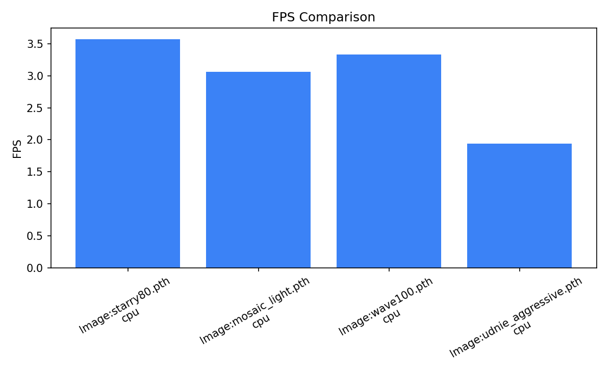
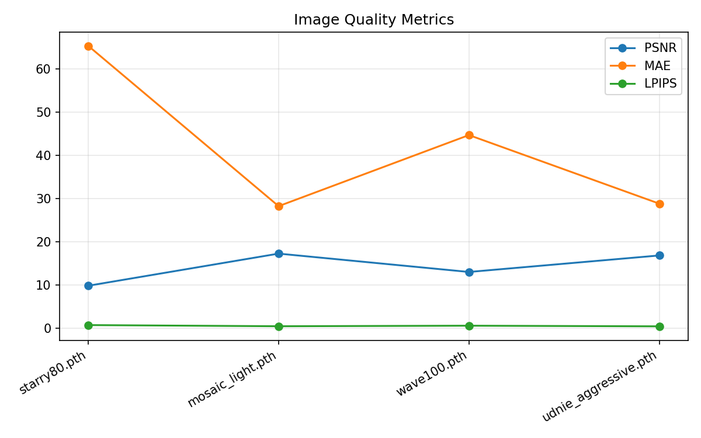
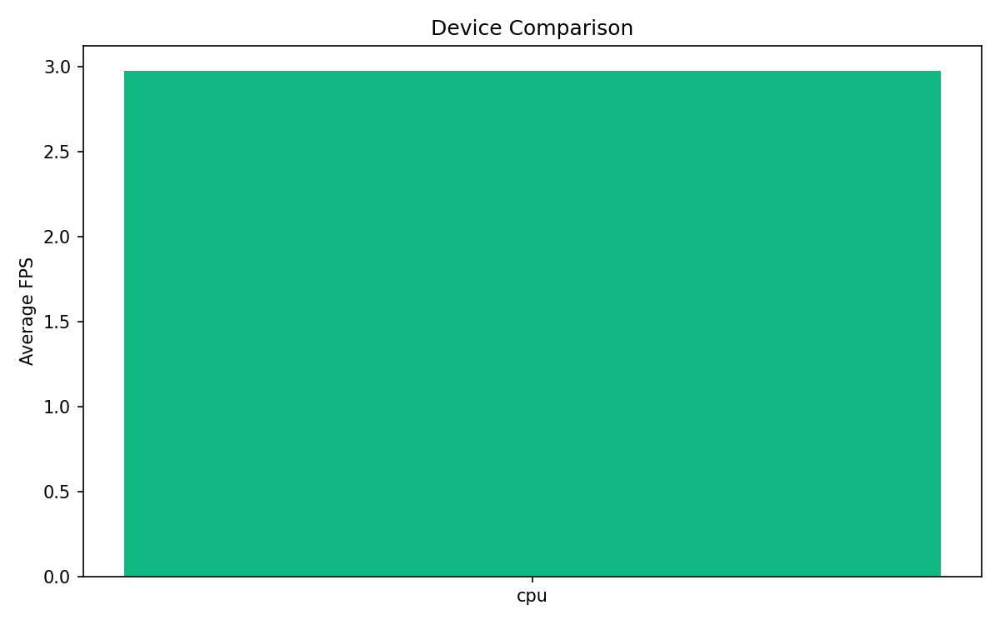

Generated: 20260519_194831
| Mode | Device | Checkpoint | FPS | PSNR | MAE | LPIPS | TWE | Notes |
|---|---|---|---|---|---|---|---|---|
| Image | cpu | /Users/macos/neural-style-video/starrynight/backend/models/starry/starry80.pth | 3.572 | 9.824 | 65.378 | 0.713 | - | Style: starry-night |
| Image | cpu | /Users/macos/neural-style-video/starrynight/backend/models/mosiac/mosaic_light.pth | 3.066 | 17.263 | 28.252 | 0.445 | - | Style: mosaic |
| Image | cpu | /Users/macos/neural-style-video/starrynight/backend/models/wave/wave100.pth | 3.335 | 13.013 | 44.715 | 0.568 | - | Style: wave |
| Image | cpu | /Users/macos/neural-style-video/starrynight/backend/models/udnie_aggressive.pth | 1.936 | 16.836 | 28.833 | 0.423 | - | Style: udnie |


